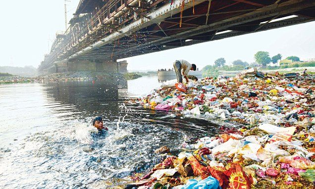
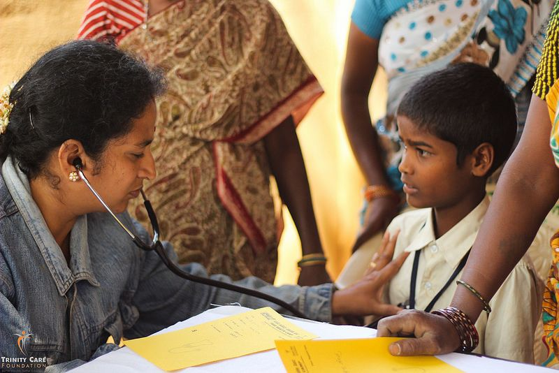
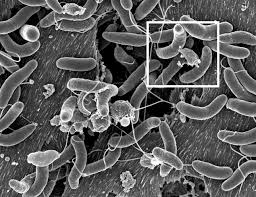
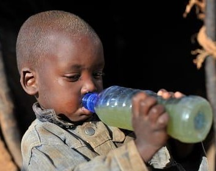
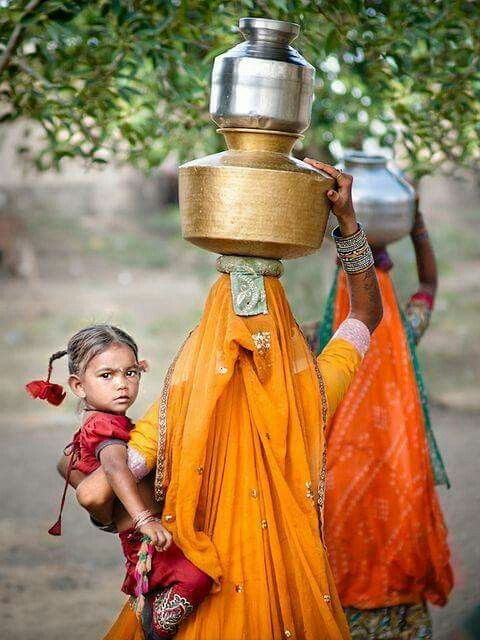

What Is Contaminated Water?
Water becomes contaminated when harmful substances enter natural water sources faster than they can be diluted or broken down. Contamination takes many forms: biological (bacteria, viruses, parasites), chemical (heavy metals, pesticides, industrial discharge), physical (sediment, microplastics), and radiological. In low-income regions, biological contamination is most deadly, but chemical contamination from mining or agriculture is rising rapidly.
The World Health Organisation defines safe drinking water as water that does not represent any significant risk to health over a lifetime of consumption. By that definition, an estimated 2 billion people worldwide are currently drinking unsafe water every single day.

Polluted river water in a densely populated region — one of billions of daily water sources for people without alternatives.
The Main Sources of Contamination
Open defecation near water sources introduces dangerous faecal pathogens. Agricultural runoff carries nitrates, pesticides, and animal waste. Industrial sites discharge heavy metals including lead, arsenic, and mercury. In urban slums, crumbling pipes allow sewage to seep into drinking water supply lines. These sources rarely act in isolation — most contaminated water sources contain multiple types of pollutants simultaneously.
people globally consume water contaminated with faeces every day, according to the WHO/UNICEF Joint Monitoring Programme for Water Supply, Sanitation and Hygiene (2023).
Health Effects of Contaminated Water
The health consequences of contaminated water range from acute illness — diarrhoea that kills within hours — to chronic, long-term conditions that develop silently over years. Both are devastating, and both disproportionately affect the world's poorest communities.

Polluted river water in a densely populated region — one of billions of daily water sources for people without alternatives.
Acute Health Effects
The most immediate and visible impact is severe diarrhoea, caused by pathogens like E. coli, Salmonella, Vibrio cholerae, and rotavirus. Children under five are most vulnerable: their immune systems cannot fight off infection and dehydration can become fatal within hours without medical intervention. Globally, diarrhoeal disease kills approximately 1.4 million children under five each year — the vast majority from contaminated water.
Hepatitis A and E, transmitted through contaminated water and food, cause acute liver inflammation. Outbreaks can sweep through entire communities in days, overwhelming fragile health systems.
Chronic Health Effects
Chemical contamination causes harm that accumulates slowly. Arsenic in groundwater — a widespread problem across South and Southeast Asia — causes skin lesions, cancers of the bladder and lungs, and cardiovascular disease after years of exposure. Fluoride contamination causes dental and skeletal fluorosis, leading to painful deformity. Lead exposure — even at very low levels — causes permanent neurological damage in children, reducing IQ and impairing cognitive development.
These chronic conditions are often invisible to global health statistics because the connection between contaminated water and illness develops over years, not days.
deaths occur each year from diarrhoea alone caused by contaminated drinking water. This is equivalent to one person dying every 64 seconds from a preventable cause.
Key Waterborne Diseases
The table below summarises the most prevalent and deadly waterborne diseases, their causes, regions most affected, and estimated annual burden. These are not historical diseases — they are active, ongoing crises.
| Disease | Cause | Regions Most Affected | Annual Deaths (est.) |
|---|---|---|---|
| Cholera | Vibrio cholerae bacterium | Sub-Saharan Africa, South Asia, Haiti | 95,000 – 130,000 |
| Typhoid Fever | Salmonella Typhi | South Asia, East Africa, Southeast Asia | 128,000 – 161,000 |
| Diarrhoeal Disease | Multiple pathogens (E. coli, rotavirus, etc.) | Global (highest in LMICs) | ~1.4 million (under-5s) |
| Hepatitis A | Hepatitis A virus | South Asia, Sub-Saharan Africa, MENA | 7,134 |
| Arsenicosis | Arsenic in groundwater (chemical) | Bangladesh, India, Cambodia, Vietnam | Long-term cancer mortality |
| Schistosomiasis | Parasitic worms in freshwater | Sub-Saharan Africa | 11,700 – 200,000 |


Left: Cholera bacteria under microscope. Right: A child drinking from an unsafe water source.
Who Is Most Affected?
Water contamination does not affect everyone equally. The burden falls most heavily on specific groups whose circumstances make them least able to avoid contaminated sources or access treatment.
Children Under Five
Children's immune systems are not fully developed, making them far more susceptible to the pathogens found in dirty water. They also consume proportionally more water relative to body weight, increasing their exposure. Malnutrition — itself linked to poor water quality and sanitation — compounds their vulnerability, creating a lethal cycle.
Women and Girls
In households without piped water access, women and girls are primarily responsible for water collection. Studies across Sub-Saharan Africa show women spend an average of six hours per day walking to and from water sources. This time cost directly reduces school attendance and economic opportunity. The physical act of carrying heavy water containers also causes chronic musculoskeletal injury. Crucially, the sources they reach are rarely safe.
Communities in Conflict or Post-Disaster Settings
When infrastructure is damaged by conflict, flooding, or earthquake, water treatment systems collapse rapidly. Cholera outbreaks following the 2010 Haiti earthquake and in war-affected Yemen demonstrate how quickly safe water access can disintegrate — and how the consequences compound across already-fragile health systems.

Women and children bear the physical and time burden of water collection across much of Sub-Saharan Africa.
What You Can Do
The scale of the water crisis can feel overwhelming, but individual and collective action genuinely matters. Below are concrete steps that students and citizens in any country can take to contribute to SDG 6 — whether directly or through advocacy and awareness.
Reduce Your Own Water Footprint
In the UK, the average person uses around 150 litres of water per day. Fixing a dripping tap, switching to a low-flow showerhead, and not running the tap while brushing teeth can collectively save tens of thousands of litres per year. This matters because global freshwater resources are finite — conservation in wealthy nations reduces pressure on shared global supplies.
Support Organisations Working on the Ground
Organisations like Water Aid, Charity: Water, and the IRC have demonstrated, evidence-based models for delivering clean water access to communities in crisis. Even small donations fund lasting infrastructure. Critically, the most effective programmes combine water infrastructure with hygiene education and sanitation — addressing the full cycle of contamination.
Advocate for Policy Change
Water is a human right, recognised by the United Nations in 2010 — yet millions are still denied it. Signing and promoting petitions, writing to elected representatives, and supporting parties that prioritise international development funding all contribute to the systemic change that individual charitable action cannot achieve alone.
Every $1 invested in clean water and sanitation generates $4 in economic return through reduced healthcare costs, increased productivity, and improved educational outcomes.
To explore more actions and calculate your personal impact score, visit the Action Impact Simulator.